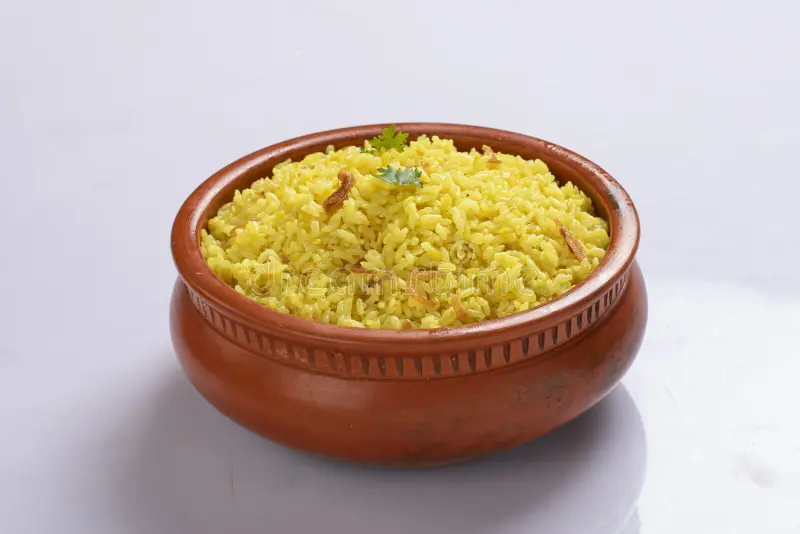

Moni's kitchen

Today's khichuri recipi
Upokoron
- Chal 500 gram
- Mosur dal 125 gram
- Mug dal 125 gram
- Piaz
- ada
- Rosun
- Zira gura
- Dhonia gura
- Chilli
- Gorom mosla gura
- Holud
- Lobon
- Sukno morich
- Tezpata
- Darchini
- Lobongo,Golmorich,Tel,Ghi,Pani
khichurir prostut pronali:
- Potome mug dai taoay halka veje nite hobe.erpor mosur dal soho panite 30 minit vijie rakte hobe.
- Erpor mosur,mug dal o chal dhue pani joranor jonno rekhe dite hobe.
- Ebar chulay pan bosie ,tel die tate alac,daruchini,tezpata,lobongo,golmorich ebong peaz die aktu veje nite hobe.
- Peaz brown color hoae asle ete ada bata,rosun bata,morich guro,lobon,holud,zira gura,dhonia gura,gorom mosla o 1 cup pani die mosla guloke valovabe kosie nite hobe.
- Mosla teke tel sere aste dhorle tate dhue raka chal,dal o khacha morich die 5-6 miniter moto nere nere onoboroto vajte hobe.kheyal rakte hobe,jeno pure na jai.
- Vaza hoae gele chal,daler digun pani die chular tap barie,bolok uta porjonto dheke ranna korte hobe.Bolok utle chular tap kpmie,dhakna tule valo kore nere die lobon chek kore nite hobe.
- Evabe 4-5 bar dhakna ultie nere vuna khichuri ranna korte hobe.
- Erpor ghi chorie 4-5 minit dhakna die dheke vuna khichuri ranna ses korte hobe.
khichuri rannar somoy lokkonio bisoy:
1.Chal jototuku tar ordhek dal die vuna khichuri ranna korle moza hoi.
2.Chal,pani,dal ekoi cupe mepe niben.
3.Chal,dal joto besi valovabe vazben vuna khichuri toto besi moza o jorjore hobe.
khichuri poribeson:
Ebar poribesoner pala.Akta Sondor poribeson khabarer ruchi onekgun barie day.vuna khichurir plate sosa,lebu,gajor,tomato kuchi kuchi kore kete die poribeson korte paren.
Evabei ekti perfect vuna khichuri ranna recipi toiri kora hoi.